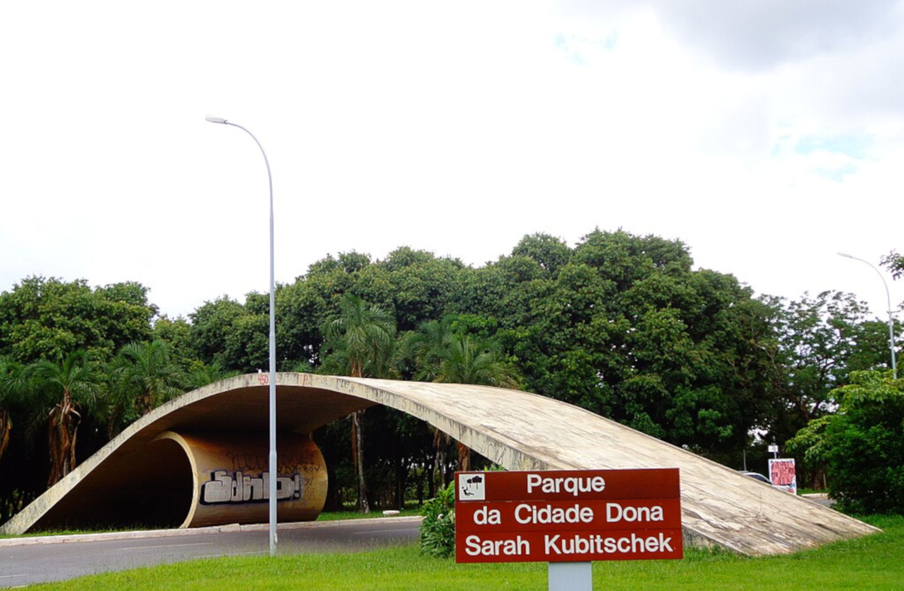
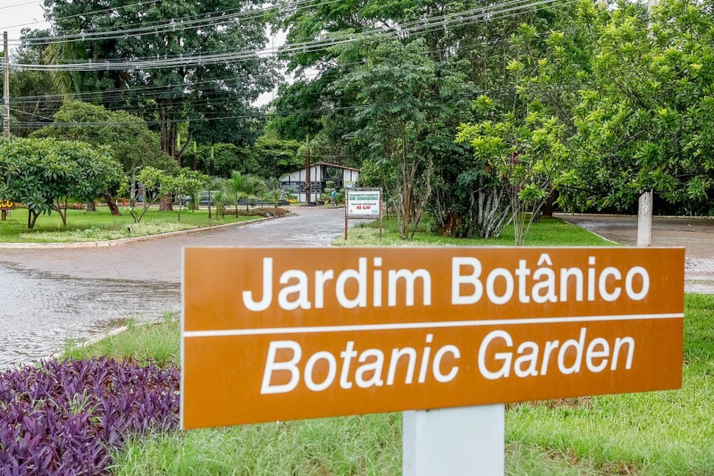
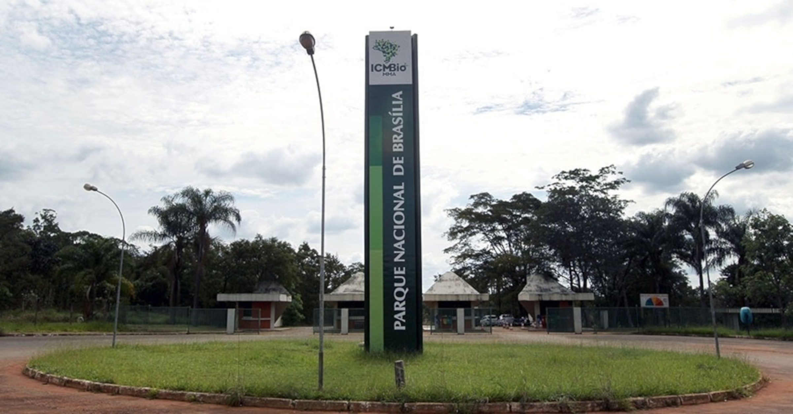
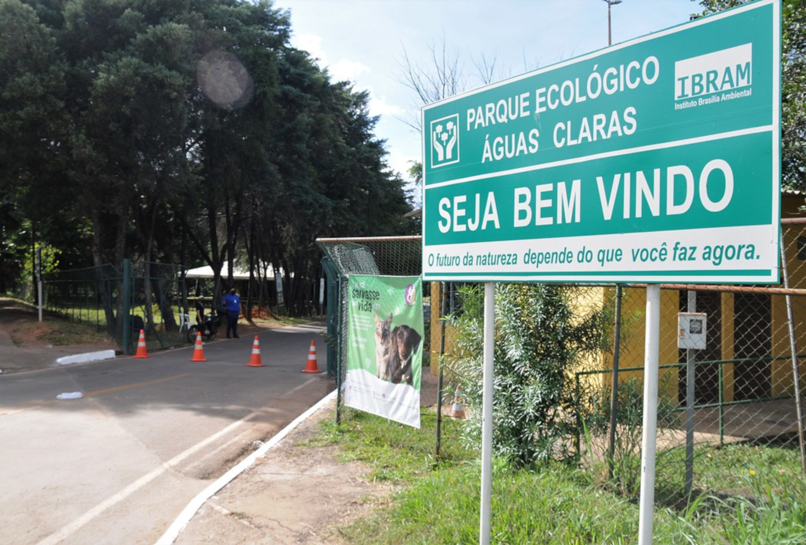
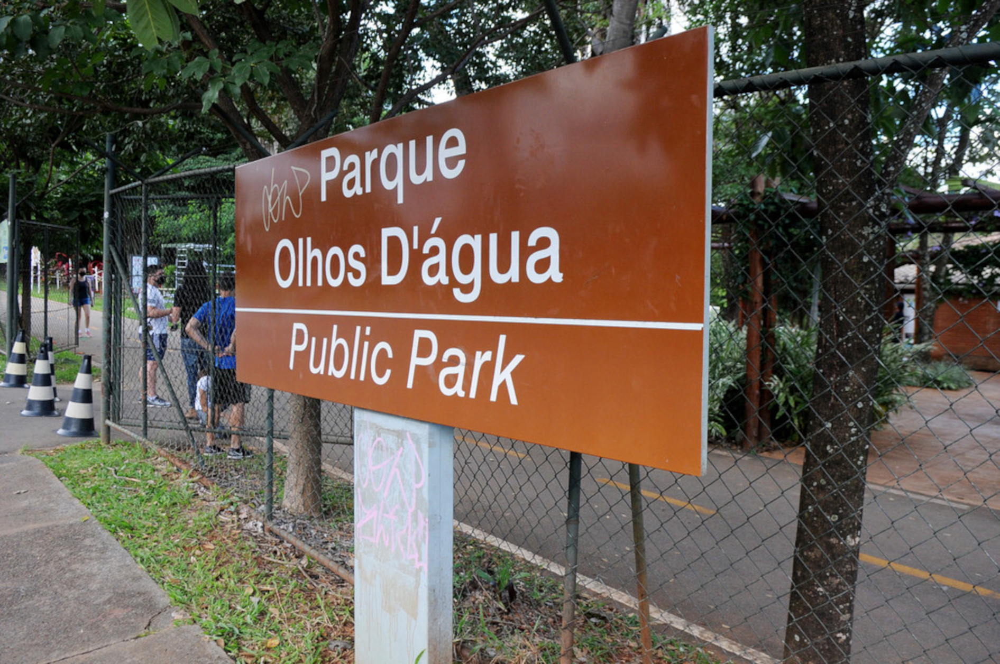

Confira cinco parques ecológicos e vivenciais próximos ao centro histórico e político de Brasília
Está de passagem rápida pela capital à trabalho ou fez algumas horas de escala por aqui e quer cumprir seu treino diário, ou mesmo respirar algumas horas de ar puro em meio à natureza?. Selecionamos um grupo de parques que ficam mais centralizados em relação ao Plano Piloto. Assim, mesmo sozinho, ou com a família, poderá usufruir de tempo saudável junto à natureza e ter contato com o bioma cerrado predominante na nossa região!
Clique nas imagens dos parques para conhecê-los melhor!
-

Parque da Cidade
-

Jardim Botânico
-

Parque Nacional de Brasília
-

Parque Ecológico de Águas Claras
-

Parque Olhos D'Água